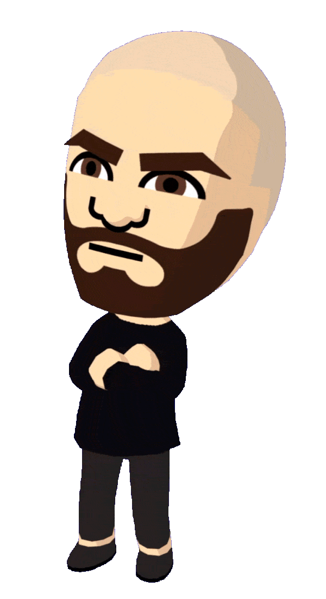
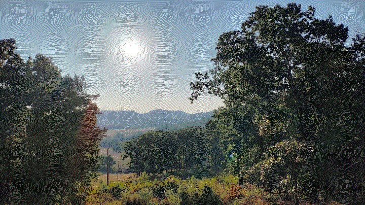
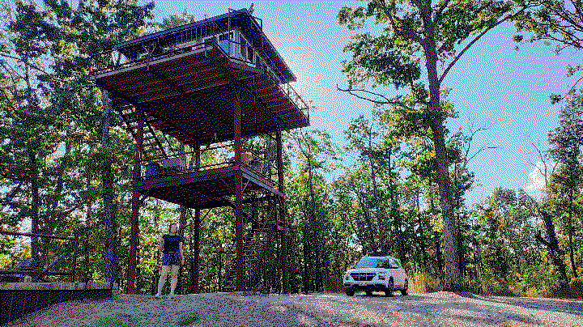

mattcolewilson.com → recent goings-on
Back to top ⤴
Made by human labor. © 2026 All Rights Reserved
mattcolewilson.com → recent goings-on

This is a page that highlights what I've been doing recently. It updates on occasion, so check back every now and then, if you'd like. This is the July 5, 2026 edition.
Finishing out a really great four-day weekend and trying not to get too annoyed at all the neighbors who are constantly shooting off fireworks. (It's been going past midnight the last few nights, which is not great, imo.) It's also been incredibly hot and humid. Real thankful we've got a place with air conditioning. Hashtag blessed, for real, for real.
What else? Oh! If you're reading this, you may be glad (or incredibly disappointed) to know that I recently got on Bluesky. I did it on a whim because I needed to message someone who had an account there and couldn't find another way of contacting them. And once I set up my profile, I decided to follow a few people I know, and yeah, I'm probably hooked at this point. I'll manage, though. I'm sure.

I've played several games since the last post. My favorite of which was Forbidden Solitaire. It's a "horror" spin on the classic card game, with several gameplay wrinkles. If you have nostalgia for the 90s and like horror fantasy dungeon-crawling stuff, I can't recommend it enough. It's essentially perfect.
Wanting more horror card games led me to finally play Inscryption. Lots of fun, but I wasn't as into the second and third acts and all the stuff it tries to do. A good game, though, just not my cup of tea. I also semi-recently learned about the real-life solo card game Scoundrel and am really wanting to give it a shot sometime soon.
I also finished BIRDCAGE and loved it. And am now getting back into The Binding of Isaac. I've played a lot of it on Switch, but grabbed it on PC, thanks to the Steam Sale and am really enjoying it. Shoutout to the Watch Out for Fireballs episode earlier this year that reignited my interest.

On the creative front, I've been doing a lot of self-initiated design work that I'll hopefully share soon. I also worked up some logo ideas for a couple of upcoming indie games and have reached out to the devs to pitch the idea of collaborating. I'd really like to do some pro-bono stuff for cool projects, especially anything video game related. If you know of something that might be up my alley, please don't hesitate to reach out.
Back to top ⤴
Made by human labor. © 2026 All Rights Reserved